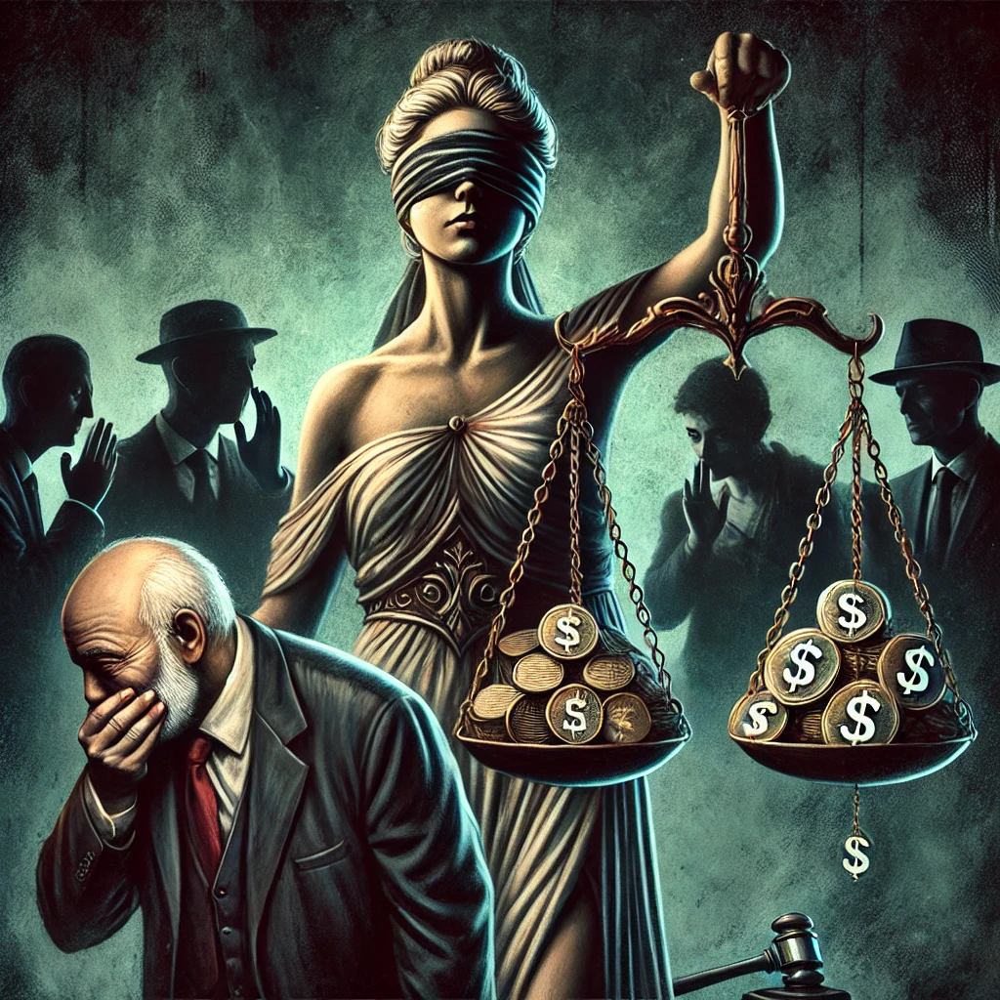

Publicado em 2025-02-11 23:00:40
Nos últimos anos, temos assistido a um padrão preocupante em Portugal: a justiça parece ter duas faces, uma rigorosa para os cidadãos comuns e outra permissiva para as elites e poderosos. A recente decisão do Tribunal da Relação, que considerou prescrita a coima de 225 milhões de euros imposta a 11 bancos pelo cartel da banca, é apenas mais um exemplo de um sistema que protege os seus enquanto pune os que não pertencem à casta privilegiada.
Este caso é sintomático do que já foi assumido publicamente por vários ministros e figuras políticas: existe uma justiça para os poderosos e outra para o povo. Este não é um problema novo, mas a forma descarada como estas situações se repetem sem consequências reflete um regime onde o nepotismo, o compadrio e a corrupção são a norma.
O problema central reside na estrutura deste regime, que se disfarça de democracia, mas que na prática funciona como uma oligarquia onde uma pequena elite detém o verdadeiro poder. A velha máxima que rege o sistema português – "aos amigos tudo, aos outros aplica-se a lei" – continua a ser a pedra angular da governação.
Os bancos, que já enriqueceram à custa dos contribuintes através de sucessivos resgates e privilégios fiscais, continuam a escapar a qualquer forma de punição séria. Quem deveria regulá-los e fiscalizá-los, seja o Governo, seja o poder judicial, acaba por atuar como um escudo protetor. O que vimos neste caso é a conivência descarada entre juízes, governantes e altos funcionários do Estado para perpetuar um sistema de impunidade.
Enquanto isso, o cidadão comum não tem as mesmas "facilidades". Se falhar um pagamento de impostos, enfrentar uma multa de trânsito ou cometer uma infração menor, sentirá rapidamente o peso da lei. Não há prescrições milagrosas para o povo, não há burocracia que "esqueça" os seus processos. Mas quando se trata de milhões de euros em infrações cometidas por grandes corporações e banqueiros, os prazos expiram, os processos arrastam-se e as condenações tornam-se inofensivas.
Perante este cenário, a única forma de romper este ciclo de impunidade é através da cidadania ativa. Se os cidadãos não exercerem pressão constante, exigindo transparência e justiça real, nada mudará. O maior trunfo das elites é o comodismo e a resignação do povo.
É preciso ir além da simples indignação nas redes sociais ou da frustração silenciosa. A mudança exige ação concreta, seja através de manifestações, exigências diretas aos governantes, boicotes estratégicos ou mesmo da criação de alternativas políticas que não estejam capturadas pelo sistema.
A democracia real só existe se o povo a fizer existir. O regime atual conseguiu, através do desgaste e do medo, tornar os cidadãos apáticos e descrentes. Mas será que a resignação deve ser a única resposta? Ou ainda há força e vontade suficiente para desafiar este sistema e exigir um país onde a lei se aplique de forma igual para todos?
A resposta está nas mãos de cada um. Se nada for feito, a história continuará a repetir-se, com os mesmos a enriquecer e os mesmos a pagar a fatura.
Imagem gerada pelo ChatGPT